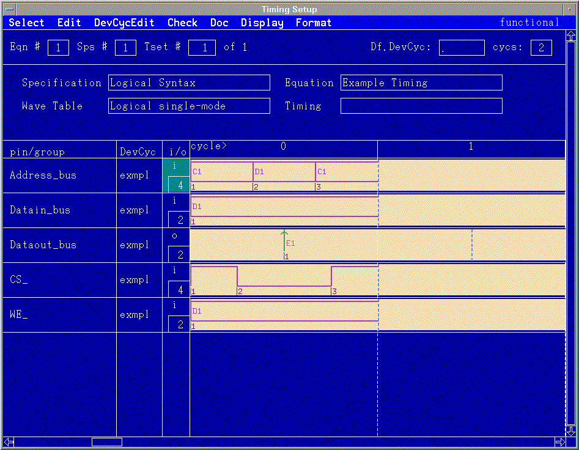
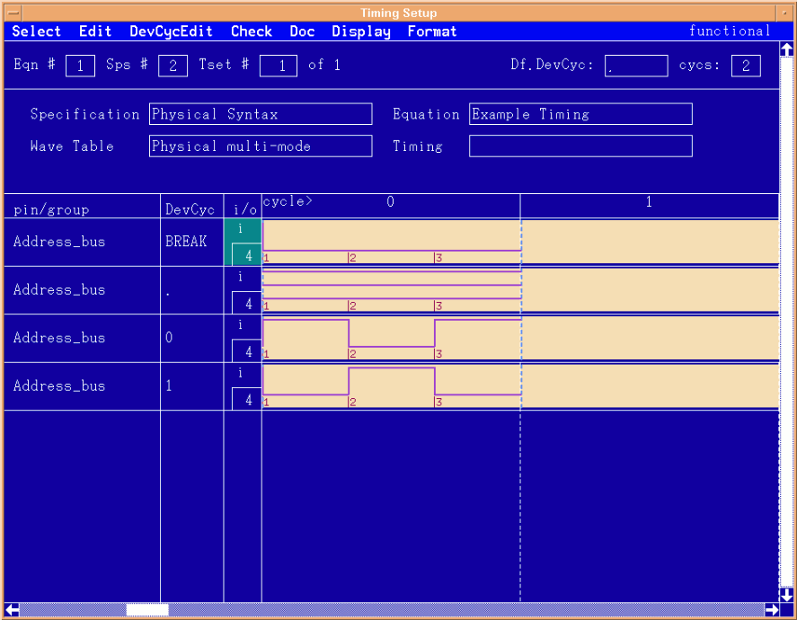

Viewing the timing setups
The same examples were used to demonstrate both syntaxes. Upon close observation, it can be seen that the contents of the wavetables in the last figure inLogical syntax and the second figure in Physical syntax are identical. As alluded to previously, the choice of which APG pattern programming methodology is used will ultimately determine which timing syntax to use. When viewing the Timing Setups, different screens of the Timing Setup window are selected depending on whether single-mode or multi-mode device cycles have been defined. The figures below show the "format pins" screen. This screen is the best choice for viewing single-mode device cycles.

Notice the logical parameter D1, its complement C1, and the receive parameter E1.

The "One Pin" screen for the Timing Setup window is being used in the figure above. Viewing multi-mode setups can be easier with this screen.